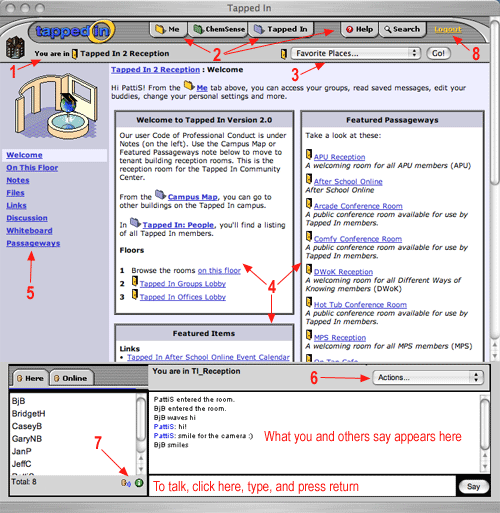

Tapped In User Interface
Below, we provide a brief description of the Tapped In user interface.
The best way to become familiar with online interaction is to take the plunge!
We suggest the following steps:
- Review and print out this page.
- Pick a date and time (or two) that is convenient for you to log in
(and ask a friend to take the tour with you).
- Contact us to ask if someone can meet you online at that time
for a 30 minute live tour.
- Sign up for Tapped In membership and immediately try to log in. If you
have difficulty, contact us and describe exactly what happened.
The screenshot of the Tapped In Reception Room, below, illustrates the main features
of the Tapped In user interface. The red numbers (1-8) in the picture indicate
information about that feature is listed below. Don't try to learn everything
at once! Get comfy with the basics and then learn new features as you need them.

Top of the Tapped In Window: Information Overlays
- (Red Arrow 1)
When you are logged in, you are always in a room. If you have chat enabled,
anything you say will be "heard" by the others who are currently in the room with you.
You can see which room you are in from the "You are in Room Name" near the top left
of the window and at the top of the chat area.
- (Red Arrow 2)
From any room, you can also access certain types of information from the "tabs"
across the top of the window. When you click on a tab to open it, it does not take
you out of the room you are in; it overlays the tab content over the room until you
close the tab overlay. Click the X in the upper left hand corner of the tab overlay
to close it.
- Me tab. The yellow Me tab is a directory of all of your own personal information
about People you know in the community (Buddies you've added), your favorite places, your
links, your notes, your files, groups you are in and your settings (your password, your
information) and etc.
- Tenant tabs. Green tenant tabs (in this example, the ChemSense tab) give you
information about the tenant program and provides you with information about people, places
(other rooms), and groups associated with the tenant. You may not see any tenant tabs unless
you registered for Tapped In with a tenant association.
- Tapped In tab. The Tapped In tab provides you with a directory of people, places
(other rooms) and groups in the larger Tapped In community. There is a campus map under the
Tapped In Tab that shows you the other buildings and lets you navigate to them.
- Help tab. The Help tab provides you with help on all topics related to using Tapped In.
- Search tab. The Search tab helps you search for People, Places, Groups, Files, and Links.
- (Red Arrow 3)
Favorite Places. A favorite place is like a browser bookmark. It provides a quick
way for you to navigate to your favorite rooms in Tapped In from anywhere in the environment.
The pull-down down menu in the upper right of the window lists all of your favorite places.
Select a room, and click the "go" button after you select the room. If you are a member of
a group, that group's room will appear automatically in your list! You can also add and
remove favorite places under the Me tab.
Middle of the Tapped In Window: Room Tools and Information
- (Red Arrow 4)
Notes. The main area of a room can be filled with "Notes". These are some examples. In addition
you can create a note with an image in it to display to people automatically as they enter
the room (example image note shown on the right of the room).
- (Red Arrow 5)
Each room has a menu on the left side of the window showing the
different areas of the room (e.g., Notes, etc.). The primary menu items are:
- Welcome. The Welcome link takes you to the main screen of a room (you see this view
when you enter a room). At the top of the room (see arrow) you can see which room you are
in and which menu item you are viewing (in this example, you are in the Tapped In reception
room; Tapped In 2 Reception : Welcome). This view contains a Welcome "sticky note" and a
Featured Items sticky note, which appear "on the wall" of the room (see Red Arrow 4).
Each tool below (note, file, link, discussion and passageway) can be featured in this area
or not.
- On This Floor. Reception rooms and floor lobbies also tell you what other rooms are on
this floor.
- Notes. You can create a Note in your personal office or a group room that you own or
have joined as a member. You can make both Text Notes and Image Notes.
In a group room, anyone can create a Note, but only the group owner or a moderator can
feature a Note, which means that it will appear on the Welcome page of the room. To feature
a Note, put a checkmark by Featured when you create it. Notes that are not featured can
be viewed by clicking on the Notes link.
- Files. Tapped In can be a great way to exchange files with others or a place to start
a library of useful documents. You can upload files to rooms that you own or have joined
as a member of a group. Files can be documents,
pictures, spreadsheets, etc. Once they are uploaded, anyone who can access the room can
see the files. Hint: Use your personal office for files that are of personal interest to
you.
- Links. This tool is similar to "Favorites" or "Bookmarks" in your Internet browser.
The benefit of placing links in Tapped In is that you can access them from any computer,
any time, and you can share them with others.
- Discussion board. Each room in Tapped In has its own threaded discussion board. Any
member who can enter a room can post a new topic, read the topics, reply to the topics,
and subscribe to the discussion board (receive postings via email). Owners of the
Discussion Board have other privileges. Guests may not post to discussion boards.
- Whiteboard. A simple text board for brainstorming ideas or copying and pasting a
passage from a document.
- Passageways. This is the group version of personal "Favorite Places." If the Group
needs to go to a certain room, such as the facilitator's office, but not all individuals
have this location as a "Favorite Place", they can use the "Passageways" to go there
(as long as someone has created it).
Other menu items:
- Group Settings (only visible to group room owners and moderators). Group room owners
and moderators can manage the membership of the group (e.g., invite or delete members)
and member permissions.
- Edit Room (only visible to room owners). Room owners can change the look and feel of
a room by clicking on the Edit Room link below the left-side room menu (you may need
to scroll down). Choices include various color schemes and pictures. Select whatever
fits your style (but keep in mind that we are creating a professional environment).
Bottom of the Tapped In Window: Communication and Awareness Tools
The chat area enables you to engage in real-time text-based conversations. For group
conversations, you all must be in the same room (listed under the Here tab). Type what you
want to say in the input line at the bottom and press return (or click Say). See what you
and others are saying in the larger output area. For private one-on-one conversations,
see below.
- (Red Arrow 6)
The Action menu at the top right of the chat area gives you more options.
- Help. Lists and describes input line actions you can use in addition to "plain talk.".
- Private Message. Opens a private conversation window with another user. First, click on a
user name listed under the Here or Online tabs on the left, and then click Private Message in
the Action menu.
- Join User. Takes you to the location of a user who is in a different room (if you have
permission to go there). (Click on a user name under the Online tab, and then click Join User
in the Action menu.
- Text Size. You can enlarge or reduce the size of the text so you can see it better.
- Detach. Separates the chat area from the rest of the window to let you see more conversation.
In detached mode, you can resize the window to whatever size you like. It can be helpful
during a meeting with several people.
- (Red Arrow 7)
Here tab.
On the left side of the chat area are two awareness tabs labeled Here and Online.
The Here tab lets you know you who is in the room with you. Below the list of people in the
room are two small icons:
- The private message icon allows you to hold a private one-on-one conversation with
another user. Click a user name in the list and then click the icon. A small private
message window will pop up. Click in the input area, and type your message as you would
in the regular chat area. Press return and a similar window will pop up on the other
person's screen. These conversations are totally private!
- The information icon shows you the member profile of another user. Click a user name
in the list and then click the icon. Their profile will appear in an overlay above the room
view.
Online tab.
The Online tab shows you who is currently online and what room they are in anywhere in
the system. Below the list of people are three small icons:
- The private message icon allows you to hold a private one-on-one conversation with
another user even if they aren't in the same room. These conversations are totally private!
- The information icon shows you the member profile of another user. Click a user name in
the list and then click the icon. Their profile will appear in an overlay above the room view.
- The open door icon allows you to join another person in whatever room they are in. Note
that you must have the appropriate permission to enter that room. Click a user name in the list
and then click the door icon. You will be "teleported" to that room.
Finally, click Logout (Red Arrow 8) in the upper right corner to
log out of the system.
|